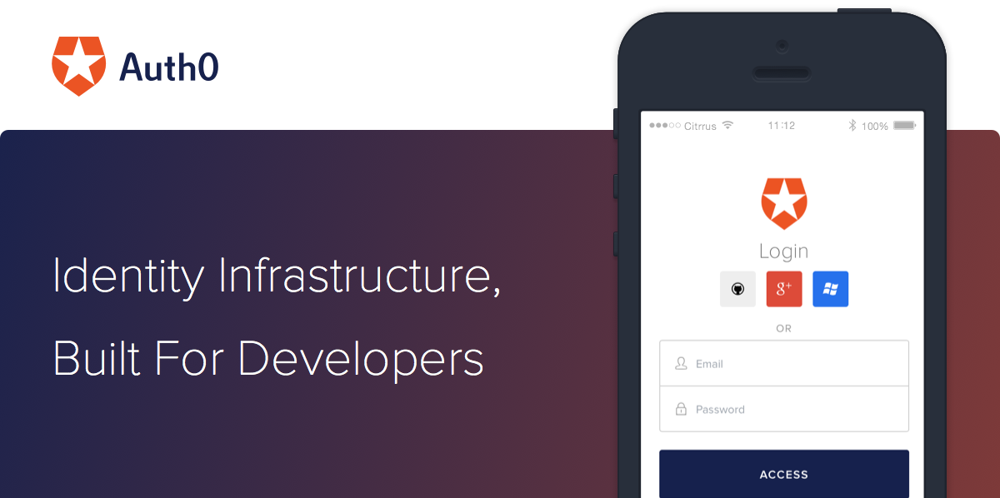

<html xmlns="http://www.w3.org/1999/xhtml"></html><head><meta name="generator" content="HTML Tidy for Linux/x86 (vers 25 March 2009), see www.w3.org"/><meta http-equiv="Content-Type" content="text/html; charset=us-ascii"/><meta name="viewport" content="initial-scale=1.0"/><meta name="format-detection" content="telephone=no"/><title>Email Template</title></head><body bgcolor="#D0D2D3"><table width="600" border="0" align="center" cellspacing="0" cellpadding="0"><tr><td></td></tr><tr bgcolor="white"><td style="padding: 20px 30px "><strong style="line-height: 30px; font-family: 'Helvetica Neue'; color: #4d4d4d">Hi there,</strong><p style="line-height: 30px; font-family: 'Helvetica Neue'; color: #4d4d4d">Lots of stuff happened in the past month, and we wanted to share the latest Auth0 updates with you:</p></td></tr><tr bgcolor="white"><td><table border="0" cellspacing="0" style="padding: 0 30px 30px 30px;"><tr><td width="42%"></td><td width="4%"></td><td width="42%"><h2 style="font-weight: 100; color: black; line-height: 26px; font-family: 'Helvetica Neue'; letter-spacing: 1px;">WordPress + Auth0</h2><p style="line-height: 22px; font-size: 13px; font-family: 'Helvetica Neue'; color: #666">Just in time for <a style="color: #44C7F4;" href="https://via.intercom.io/c?url=https%3A%2F%2Fwww.firebase.com%2Fblog%2F2014-03-28-firebase-at-emberconf.html&amp;h=d190745dee9227f8f7fbccd4f9ff73087e611832-362335445">EmberConf</a>, we released <a style="color: #44C7F4;" href="https://via.intercom.io/c?url=https%3A%2F%2Fgithub.com%2Ffirebase%2FemberFire&amp;h=66fe4bf8fab50500da01b6308e332537ca88c7d6-362335445">new bindings for Ember</a> that work directly with Ember Data along with an <a style="color: #44C7F4;" href="https://via.intercom.io/c?url=https%3A%2F%2Fwww.firebase.com%2Fquickstart%2Femberjs.html&amp;h=77ff20d2cecfd03a3c2e128b9bbf7d5998bdc85d-362335445">Ember Quickstart Guide</a>. Add Firebase to your Ember app in just one step, and join our new <a style="color: #44C7F4;" href="https://via.intercom.io/c?url=https%3A%2F%2Fgroups.google.com%2Fforum%2F%23%21forum%2Ffirebase-ember&amp;h=85b1a50e11665895d40d320069bfe338be4d955b-362335445">Firebase + Ember Google Group.</a></p></td></tr></table><table border="0" cellspacing="0" style="padding: 30px;"><tr><td width="42%"><h2 style="font-weight: 100; color: black; line-height: 26px; font-family: 'Helvetica Neue'; letter-spacing: 1px;">Realtime REST API</h2><p style="line-height: 22px; font-size: 13px; font-family: 'Helvetica Neue'; color: #666">Our REST API is now realtime! You can now add realtime notifications to your Firebase app in languages like Python or Ruby, where we don't yet have native libraries. <a style="color: #44C7F4;" href="https://via.intercom.io/c?url=https%3A%2F%2Fwww.firebase.com%2Fblog%2F2014-03-24-streaming-for-firebase-rest-api.html&amp;h=7a584bc7e7be7f0b80179c5759b75ebc32b51d56-362335445">Read our blog</a> to find out how to stream from our REST API in 3 steps.</p></td><td width="4%">&nbsp;</td><td width="42%" style="padding: 0 30px; border: 1px solid #ccc;"></td></tr></table><table border="0" cellspacing="0" style="padding: 30px;"><tr style="padding-top: 30px;"><td width="42%" style="padding: 0 20px; border: 1px solid #ccc;"></td><td width="4%">&nbsp;</td><td width="42%"><h2 style="font-weight: 100; color: black; line-height: 26px; font-family: 'Helvetica Neue'; letter-spacing: 1px;">Firebase + Angular Tutorial on egghead.io</h2><p style="line-height: 22px; font-size: 13px; font-family: 'Helvetica Neue'; color: #666">Want to get started with Firebase and Angular in 6 minutes? Check out this new <a style="color: #44C7F4;" href="https://via.intercom.io/c?url=https%3A%2F%2Fegghead.io%2Flessons%2Fangularjs-get-started-with-firebase-and-angularfire&amp;h=1c26faf0f58a10d6293addc18891c07c210aec7c-362335445">Firebase + Angular getting started tutorial</a> on a leading Angular tutorial site, egghead.io.</p></td></tr></table><table border="0" cellspacing="0" style="padding: 30px;"><tr><td width="42%"><h3 style="font-weight: 100; color: black; line-height: 26px; font-family: 'Helvetica Neue'; letter-spacing: 1px;">Developer Success Stories</h3><p style="line-height: 22px; font-size: 13px; font-family: 'Helvetica Neue'; color: #666">See what others are building with Auth0! Berkshire Hathaway Travel implemented Auth0. added new customer stories to our site. Check out our case studies on <a style="color: #44C7F4;" href="https://via.intercom.io/c?url=https%3A%2F%2Fwww.firebase.com%2Fcustomers%2Finvision-case-study.html&amp;h=8c3186db6d1124c35dab665b7556291231521bd8-362335445">InVision</a> and <a style="color: #44C7F4;" href="https://via.intercom.io/c?url=https%3A%2F%2Fwww.firebase.com%2Fcustomers%2Fcitrix-case-study.html&amp;h=213b0c97eea8d04c62e39b58af36316a32b387ef-362335445">Citrix</a>, and Fireside Chat blog posts on <a style="color: #44C7F4;" href="https://via.intercom.io/c?url=https%3A%2F%2Fwww.firebase.com%2Fblog%2F2014-03-13-fireside-chat-union-test-prep.html&amp;h=d48eabc0197157ecf9e566d88e58fcf90f329cef-362335445">Union Test Prep</a> and <a style="color: #44C7F4;" href="https://via.intercom.io/c?url=https%3A%2F%2Fwww.firebase.com%2Fblog%2F2014-04-02-fireside-chat-flawk.html&amp;h=4420fe9392928560cedf4fba9c537e0ba84e862e-362335445">Flawk.</a></p></td><td width="4%">&nbsp;</td><td width="42%" style="padding: 0 30px; border: 1px solid #ccc;"></td></tr></table></td></tr><tr bgcolor="white"><td style="padding:  30px; "><p style="line-height: 30px; font-family: 'Helvetica Neue'; color: #4d4d4d">We're always here to help! Email us at support@auth0.com, join the community in our Google Group, or mention us @Firebase on Twitter.</p><p style="line-height: 30px; font-family: 'Helvetica Neue'; color: #4d4d4d"><strong>Happy Authentication!</strong><br/><em style="font-size: 12px;">Jon, Eugenio, Matias, Federico, Jose, Jeremy, Alberto, Iaco, Cristian, Gonto, Ricky, Yenkel</em></p></td></tr><tr><td><a href="" style="display: block; text-align: center; margin: 20px 0 60px 0; background: #55acee; color: white; text-transform: uppercase; border-radius: 3px; font-family: 'Helvetica Neue'; font-size: 12px; letter-spacing: 1px; font-weight: bold; text-decoration: none; padding: 20px;"><span>Follow Us On Twitter</span></a></td></tr></table></body>